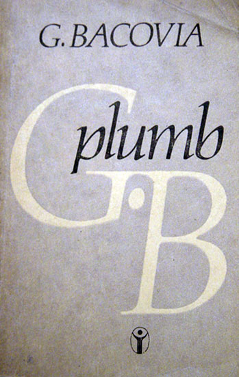
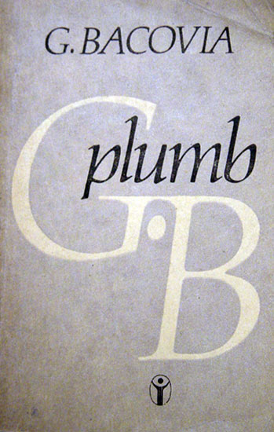

În poezie tema principală este moartea.
Cuvântul-cheie al poeziei este "plumb", care are valoare de simbol, repetiţie şi epitet.
Prima strofă defineşte un univers rece, străin.
În acest univers poetul trăieşte sentimentul singurătăţii tragice.
Strofa a doua defineşte realitatea interioară.
Poetul invocă amorul, dar acesta doarme
întors cu faţa spre moarte.
• Compoziţie, limbaj artistic, limbaj poetic
Verbele la imperfect (dormeau, dormea, stam)
sugerează persistenţa atmosferei deprimante.
Repetiţia conjuncţiei "şi"
amplifică atmosfera macabră:
"şi flori de plumb şi funerar vestmânt - / ...şi era vânt... /
şi scârţâiau coroanele... şi-am început să-l strig... şi era frig... şi-i atârnau aripile de plumb....".
Epitetele "adânc", "întors", "funerar", "singur" contribuie la realizarea unei nelinişti
metafizice.
La nivelul prozodic se constată folosirea iambului.


 
